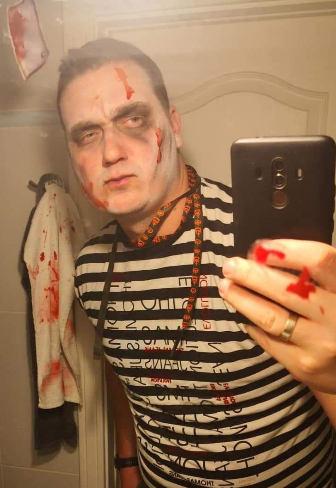

|

|
Császár-Nagy Márk 38 Budapest Online sportújságíró; főszerkesztő, digisport.hu Hobbik: Család, Sport, Koncertek Kedvenc film: Good Will Hunting |
Az előző munkahelyem, a DIGI Sport megszűnése után úgy láttam, eljött az idő a karrierváltásra. Mindig foglalkoztatott az, hogy milyen lehet, amikor egy honlap tartalmi része helyett a fejlesztési oldalát kezelem. Remélem a következő hónapokban sikerül elsajátítanom egy erős alaptudást, hogy elindulhassak ezen a pályán.